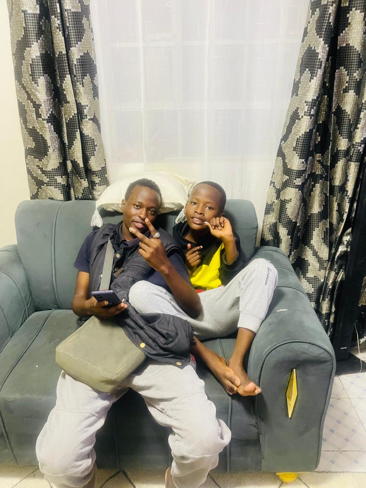
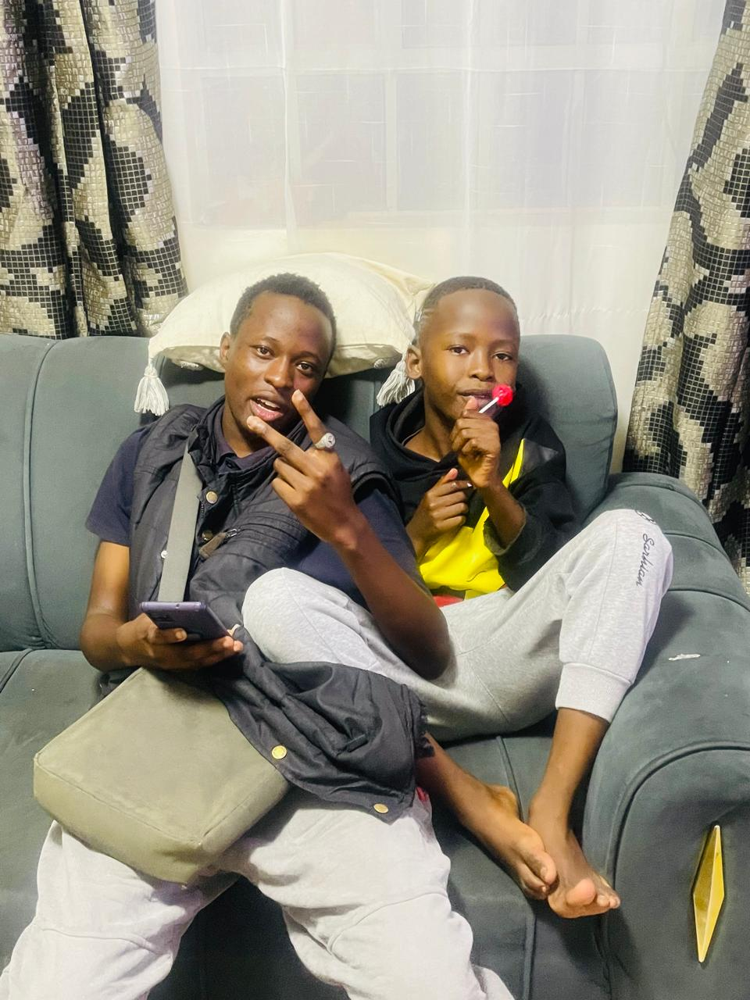
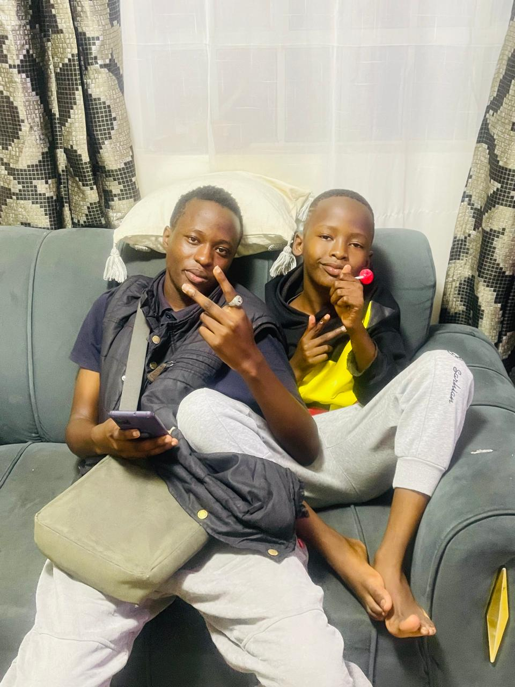

Built on presence
The strongest memories are not always loud. Sometimes they live in one simple moment shared with the right person.
- Real bond
- Quiet strength
- Shared comfort
This page is a quiet space for the bond between Marvin Nyalia, known as Marvoh, and Liam Nyalia. It is built around simple moments, real closeness, and the kind of love that keeps showing up.
More than pictures, this page carries closeness, guidance, and the steady love that helps a young boy grow well.
The strongest memories are not always loud. Sometimes they live in one simple moment shared with the right person.
Liam is growing with love around him, and these photos carry the pride that comes from being there for him.
These are the kinds of pictures that gain value with time because they hold relationship, not just appearance.
Each photo here carries its own feeling, but together they tell one story of family, trust, and presence.

A bright outdoor moment that feels free, natural, and full of the easy joy between Marvoh and Liam.

A calm frame that feels honest and unforced, like a quiet reminder that real bonds do not need performance.

An everyday photo that feels warm and familiar, the kind of memory that becomes stronger over time.

The little details make this one special. It feels like the kind of memory people hold onto for a long time.

A strong closing image for the page, full of pride, care, and the feeling of being there for each other.
Short encouraging words written like a personal note from Marvin Nyalia to Liam Nyalia.
Liam, keep growing with confidence and a good heart. The light you carry will keep opening good paths for you.
I want you to keep believing in yourself, stay humble, and keep learning. You have a bright future ahead of you.
May you grow with wisdom, peace, and courage. May you always know that you are loved, seen, and supported.
The best memories are not always the loudest ones. Sometimes they are the quiet moments that prove love is present.